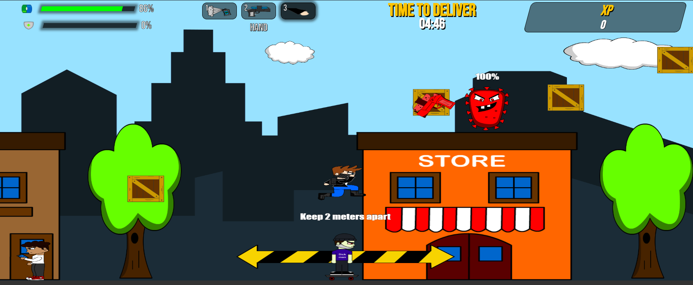

Extreme Delivery
Quarantine

Creadores: Andrés López y Andres Ortega
*Este videojuego actualmente se encuentra en su versión beta, los navegadores compatibles son: Microsoft Edge ,Opera y Opera GX. Pueden surgir problemas de rendimiento y fallos en otros navegadores, por lo tanto procure usar los navegadores mencionados (No compatible en dispositivos móviles).*
Descripción
Extreme Delivery - Quarantine es un videojuego diseñado en JavaScript puro de tipo plataforma y está basado en la pandemia producida por COVID-19 en el año 2020. El juego trata sobre un joven que trabaja como repartidor de paquetes para una compañía que realiza envíos de diferentes productos, el repartidor deberá cumplir con su trabajo en una situación de pandemia generada por un virus. El jugador controlara a este personaje y deberá enfrentarse con diferentes enemigos y obstáculo que aparecerán dentro del escenario, tendrá que llegar a su destino a tiempo y sin ser derrotado.
Jugabilidad
Repartidor( Jugador )
Es el personaje principal del videojuego, deberá entregar un paquete en un límite de tiempo, por el camino se encontrará con enemigos asociados al virus, el jugador deberá defenderse de estos enemigos a partir de 2 armas que son: la pistola de agua con jabón y el spray desinfectante. Por otro lado, el jugador contara con 2 elementos que aumentaran su salud: La píldora y el escudo, si se acaba el tiempo de entrega o la vida del jugador llega a 0% se pierde la partida, el jugador ganara la partida cuanto llegue al marcador y entregue el paquete.
Sick Man
Estos personajes aparecerán dentro del escenario del juego de forma aleatoria, son persona que están contagidas y se irán moviendo hacia el personaje principal. El jugador deberá estar a más de 2 metros de distancia para no ser afectado.
Sneeze Guy
Es una persona común y corriente que se encuentra dentro del escenario, no porta tapabocas, por lo que podría o no estar contagiado. Este personaje estornuda y libera gotículas, el jugador deberá reconocer si esta contagiado o no al ver el color de las gotículas, si son azules significa que este personaje no está contagiado, y si entran en contacto con el jugador no causara daño a este, a diferencia de si son de color rojo, estas gotículas contienen el virus que si entran en contacto con el jugador bajara su barra de salud, por lo tanto el jugador podra defenderse de este personaje usando su spray desinfectante.
Soldier
El soldado es un virus que está bajo el mando del jefe final, este personaje tendrá un arma que disparará automáticamente al jugador principal con el fin de derrotarlo, cada disparo recibido por parte de este enemigo generará un 5% de daño.

Final Boss
Este es el último enemigo con el que el jugador deberá enfrentarse, cuenta con 1000% de vida, su aparición será entre el jugador y el punto de entrega del paquete y se moverá de un lado a otro disparando microorganismos. El jugador tendrá que usar la pistola de agua y el spray desinfectante para derrotar al Final Boss y para destruir los microorganismos que provienen de él. Cuando el jefe final sea derrotado aparecerá un marcador en donde el jugador tendrá que situarse para completar el nivel y ganar.